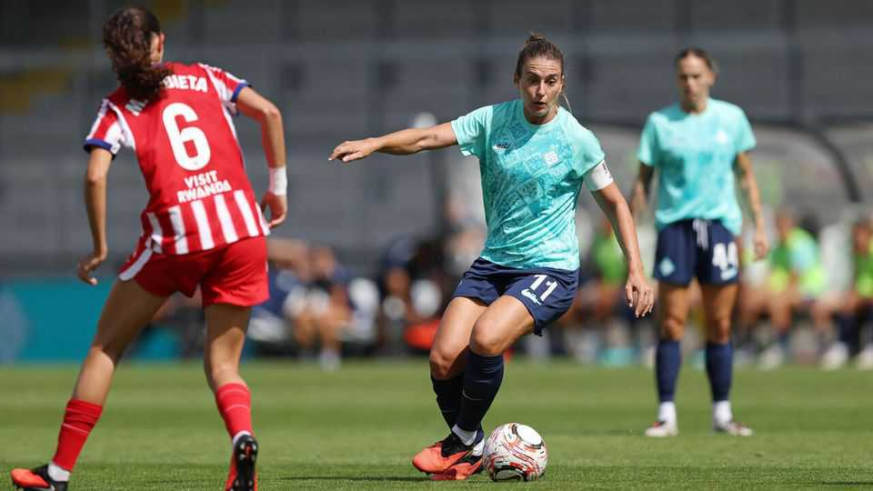

Why the world’s best female footballer joined a tiny London team
At stake is whether a women’s team can flourish independently of a men’s franchise

Sep 3rd 2026
Alexia Putellas is known as la reina (the queen). In 14 years at Barcelona, the Spanish footballer won the Women’s Champions League four times and ten domestic league titles. She lifted the World Cup with Spain in 2023 and has twice received the Ballon d’Or Féminin for the world’s best player. This summer she swapped Barcelona for the Bromley-based London City Lionesses (LCL), a seven-year-old team with a small stadium. Why?
LCL was originally the women’s offshoot of Millwall, a club best known for its fans’ predilection for fighting. In 2019 the Millwall Lionesses opted for independence and adopted a new name. Four years later, the club was bought by Michele Kang, an American entrepreneur who also owns women’s teams in America and France. Since winning promotion last year to the Women’s Super League (WSL), the top tier of English women’s football, LCL has gone on a remarkable spending spree. As well as Ms Putellas, the club has signed a former England goalkeeper, Mary Earps, and other stars from Australia and France.
A rich overseas owner splashing their cash is a familiar story in English men’s football. But for every Manchester City or Chelsea, for which investment brought success, there is a Leicester City or Portsmouth, where overspending led to the brink of ruin. The WSL is keen to avoid that. For the 2026-27 season, which kicks off on September 4th, clubs must operate within new spending limits. Outlays on players and wages must not exceed 80% of revenue, plus an owner’s own-money contribution equivalent to 25% of revenue or up to £4m ($5.5m), whichever is higher. Clubs that fail to comply can be punished with fines and points deductions.
The new rules are designed to encourage financial sustainability, but they also risk entrenching the dominance of the existing giants. Arsenal and Chelsea, for example, who between them have won the WSL for eight of the past nine seasons, each recorded revenue of €25m (£21m, or $29m) in their most recent accounts. They will have much larger budgets for transfers and wages than their rivals.
Ms Kang is betting on the ability of her club’s commercial team to increase its revenue dramatically and offset the spending on new players. In 2024-25 its total revenue was just over £900,000. Ms Putellas’s annual salary alone has been reported at close to that figure. Although revenue will have risen sharply since that time—a bigger WSL broadcasting deal with Sky and the BBC began in 2025-26—so too will have LCL’s costs. The club posted a loss of £10.6m in 2024-25. Revenue may need to rise as much as 15-fold to remain compliant with the WSL’s rules.
LCL is the only club in the 14-member league that is not linked to a larger men’s team. Christina Philippou, an expert in football finance at the University of Portsmouth, believes this is an advantage: “London City have a better ability to leverage the female-focused brands in a way that some of the affiliated teams cannot, because of the association with their men’s sides.” She also believes that Ms Kang’s ownership of Washington Spirit in America and OL Lyonnes in France could boost sponsorship, thanks to an ability to offer deals that reach three different markets.
But LCL also lacks the infrastructure that can give other women’s teams a leg up. Arsenal’s women now play their home matches at the Emirates Stadium and achieved average attendances of over 33,000 in 2025-26. For now, LCL borrows the stadium owned by a third-tier men’s side, Bromley. It attracted average gates of 3,200 last season.
Alex Stewart, CEO of Analytics FC, a football consultancy, argues, “The only way to disrupt the established wsl hegemony is to buy your way in.” Ms Kang has certainly done that. It is possible that Ms Putellas will prove the catalyst that establishes LCL as a permanent contender in women’s football. On the field, she could push the team into Champions League qualification, unlocking a new source of prize money. Off it, her profile could enable sponsorship deals of the magnitude required to make the club financially compliant. But it is a bold gamble.■